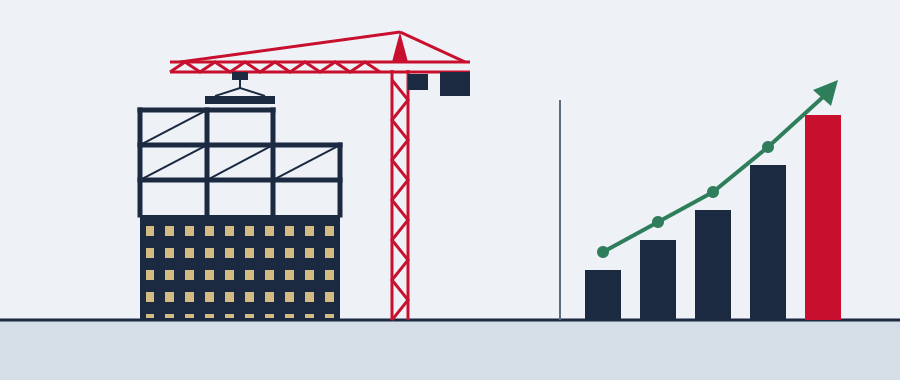

My Experience
Here's a closer look at what I've been doing outside of class. Most of my experience falls into three areas: finance and investment, engineering project management, and sustainability. They might look like very different worlds, but they connect more than you'd expect. Every big building project is also a big financial decision, and both sides depend on good data.

Finance & Investment
2024 to 2026, four internships
My first internship was at Hongzheng Lide Capital in the summer of 2024, where I tracked funds across 28 sectors and ranked them by excess return. I used Wind a lot there to pull data on growth trends and valuations. In 2025 I joined CICC Wealth Management and analyzed more than ten wealth management products, including China A50, CTA, market-neutral, and snowball products. In early 2026 I interned in the Corporate Finance Department at Guangdong Nanyue Bank, which showed me how corporate lending and credit approval work behind the scenes. Most recently, at Hainan Yimo Investment, I researched private equity opportunities in brain-computer interfaces, medical devices, and innovative drugs.
Engineering & Project Management
Sep 2024 to present
Since September 2024, I've been the United States General Manager and a Project Manager at Zhongjihua Engineering Management Group. I research U.S. construction and real estate practices and look for potential partners, and I've represented the company at World of Concrete, the NAHB International Builders' Show, and the AGC Annual Convention. I also help manage projects like residential developments, public healthcare facilities, and industrial parks, coordinating schedule, cost, and quality between owners, contractors, and supervision teams.
Green Horizon Initiative
Sep 2023 to present
In 2023 I founded the Green Horizon Initiative together with Zhongjihua. The goal is to promote eco-friendly construction techniques. We work with government partners on projects, and we try to connect industry professionals, NGOs, and policymakers so they can share ideas about green innovation in construction.
My Timeline
Each bar shows how long I was in a role. The dashed line marks today, so any bar that reaches it is something I'm still doing. Hover over (or tap) a bar to see the details.
All My Roles, in Order
- Founder & Project Leader, Green Horizon Initiative Sep 2023 to present, Beijing
- Intern, Investment Management, Hongzheng Lide Capital Management May 2024 to Jun 2024, Beijing
- U.S. General Manager & Project Manager, Zhongjihua Engineering Management Group Sep 2024 to present, hybrid
- Intern, Wealth Management, China CICC Wealth Management Securities Jul 2025 to Aug 2025, Beijing
- Intern, Corporate Finance, Guangdong Nanyue Bank, Shenzhen Branch Jan 2026 to Apr 2026, Shenzhen
- Investment Research Intern, Hainan Yimo Investment Mar 2026 to Sep 2026, Beijing
Tools I Use
- Python
- R
- SQL
- Stata
- Wind
- Bloomberg
- Microsoft Office